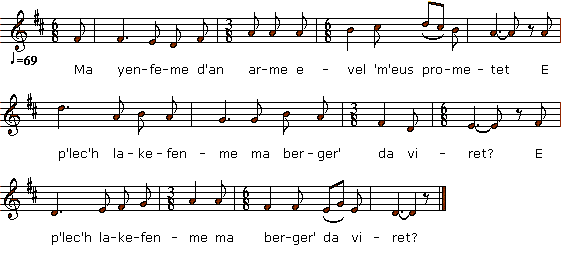

|
A propos de la mélodie C'est une des nombreuses mélodies, peut-être la plus surprenante, qui accompagnent les chants sur le thème de l'épouse noble ravalée au rang de bergère ('Berjelenn") par son beau-frère et sa famille, en l'absence de son mari parti à la guerre. Ce thème est repéré, pour la Bretagne, dans la classification de M. Malrieu sous 0063 "An daou vreur" (Les deux frères), mais Théodore de Puymaigre a montré qu'il existe dans toute l'Europe sous des titres divers (la Poucheireto, la Noble Porquera, Germaine, etc.) La Villemarqué a utilisé deux variantes de ces chants notées pp. 112-115 et 202 du carnet n°1, pour composer son Epouse du Croisé publiée dans le Barzhaz de 1839. A propos du texte Ces textes se présentent habituellement sous forme d'alexandrins rimant deux à deux regroupés en quatrains. Souvent un pied ou parfois deux sont répétés dans le chant, si bien que l'alexandrin devient un vers à 13 ou 14 pieds. Le quatrain noté par La Villemarqué comme étant un "chant de clerc" est en réalité une strophe burlesque concluant le long récit, dans laquelle le chanteur sollicite une boisson pour récompenser sa prestation. Il en est ainsi dans cette version d'"Ar Verjelenn" interprêtée par Manu Kerjean (1913-1997) et Lomig Donniou du Pays Fisel, enregistrée en 1975 par Pierre Guilleux et Erik Marchand. Elle commence comme le chant du Barzhaz. Le noble personnage sur le départ pour l'armée demande à son beau-frère s'il peut s'occuper de sa douce "bergère" (son épouse) en son absence et celui-ci lui promet de la loger dans les appartements réservés à "ses demoiselles". "Na mag an-me d'an arme / evel ma kontan monet E-menn e lakin-me ma dous / berjelenn da viret ?" "Reit-hi din eta ma breur kaer / reit-hi din ma karet Me he lako e-barzh en kambr / gant ma dimezelled, .... Après les retrouvailles des époux, sept ans plus tard, et la découverte de la situation indigne qui a été faite à la pauvre Bergère, le chant dérive: Un distique donne la recette de la soupe à l'andouille, puis un quatrain compare les mérites respectifs des Vannetaises et de filles du Pays Fisel, concernant l'art d'embrasser... ... Viennent enfin 4 distiques dont trois font échos au quatrain noté en 1840 ou 1841 par La Villemarqué dans le carnet de collecte N° 2: "Echu eo ma c'hanaouenn, ec'h aomp da droc'hañ da verr Kar trawalc'h a momp lâret evit daou vab pilhotaer Skalfet eo ma muzelloù, aet eo ma beg d'an treuz N'on ket ken evit kanañ gant ar sec'hed am eus M'am befe bet ur bannac'h sistr pe ur bannac'h lagout Kalz a vat a refe din da lâret ma zraoù tout M'am befe bet ur bannac'h sistr pe ur bannac'hig rom Kalz a vat a refe din da echuiñ ma chañson" Ce qui signifie: "Ma chanson est finie, nous allons couper court Car nous en avons assez dit pour deux fils de chiffonnier! "Mes lèvres sont crevassées, ma bouche est de travers, Je n'arrive plus à chanter tellement j'ai soif ! Si j'avais eu un coup de cidre ou d'eau-de-vie Cela m'aurait fait grand bien pour chanter tout le reste. Si j'avais eu un coup de cidre ou de rhum Cela m'aurait fait grand bien pour clore ma chanson." |
About the tune This is perhaps the most surprising of the many melodies that accompany the songs on the theme of the noble bride lowered to the level of a shepherdess ('Berjelenn') by her brother-in-law and his family, in the absence of her husband gone to war. This topic is classified in the. Malrieu code system for Brittany as # 0063 "An daou vreur" (The two brothers) but Theodore de Puymaigre has shown that it exists throughout Europe under various titles (Poucheireto, Noble Porquera, Germaine, etc.). The Villemarqué used two variants of these songs noted on pp. 112-115 and 202 in notebook No. 1, to compose his Bride of the Crusader published in the 1839 Barzhaz. About the lyrics These texts are usually in the form of alexandrines rhyming two by two and grouped into strands of four verses (quatrains). Often one foot in a verse, or sometimes two, are repeated when sung, so that the alexandrine becomes a verse at 13 or 14 feet. The quatrain noted by La Villemarqué as a "Cleric's song" is a burlesque stanza, usually concluding the long narrative, in which the singer solicits a drink to reward his performance. An instance of it occurs in the version of "Ar Verjelenn" interpreted by Manu Kerjean (1913-1997) and Lomig Donniou from the Breton area known as "Pays Fisel", as recorded in 1975 by Pierre Guilleux and Erik Marchand. It begins in the same way as the Barzhaz song: the noble character who leaves for the army asks his brother [-in-law, in that specific song] to take care of his sweet "shepherdess" (wife) in his absence and the latter promises him to keep her in the apartmentsreserved to the noble ladies of his family. "Na mag an-me d'an arme / evel ma kontan monet E-menn e lakin-me ma dous / berjelenn da viret ?" "Reit-hi din eta ma breur kaer / reit-hi din ma karet Me he lako e-barzh en kambr / gant ma dimezelled, .... After the reunion of the couple, seven years later, and the discovery of the humiliating conditions imposed on poor Bergère, the song goes astray: A couplet gives a recipe for a chitterling sausage soup, then a quatrain compares the merits of the Vannes girls and the Pays Fisel girls concerning the art of kissing. ... Then come 4 final stanzas, three of which echo the quatrain recorded in notebook N° 2 in 1840 or 1841 by La Villemarqué: "Echu eo ma c'hanaouenn, ec'h aomp da droc'hañ da verr Kar trawalc'h a momp lâret evit daou vab pilhotaer Skalfet eo ma muzelloù, aet eo ma beg d'an treuz N'on ket ken evit kanañ gant ar sec'hed am eus M'am befe bet ur bannac'h sistr pe ur bannac'h lagout Kalz a vat a refe din da lâret ma zraoù tout M'am befe bet ur bannac'h sistr pe ur bannac'hig rom Kalz a vat a refe din da echuiñ ma chañson" Meaning: "My song is over, we will cut short Cause we are but two ragpickers, no used to long speeches! "My lips are cracked, my mouth is crooked, I can not sing any longer so thirsty I am! If I had a shot of cider or brandy This would do me much good and I could sing the rest. A shot of cider or rum It would do me much good to help me close my song." |
|
BREZHONEG (Stumm KLT) SON AR C'HLOAREK Pajenn 42 / 21 1. Ma chalonik a vank din, ma beg zo aet dan treuz Ne hallon mui kanañ gant ar sechet am euz Eur banné sistr da eva confortfe ma chalon Neuze em-befe kalon da frappa war ma son. Transcrit KLT par Christian Souchon |
FRANCAIS CHANSON DU CLERC Page 42 / 21 1. Le cur me manque et jai la bouche de travers, Tant la soif.me tourmente. Aussi mon chant se perd. Une goutte de cidre m'irait droit au cur, Et je pourrais scander mon chant avec ferveur. Traduction Christian Souchon (c) 2019 |
ENGLISH THE CLERIC'S DITTY Page 42 / 21 1. My heart is near to swoon and my mouth is slanting I am so thirsty that my song turns to ranting A drop of cider would comfort my fainting heart, Then I would recover: my song I could restart Translation Christian Souchon (c) 2019 |